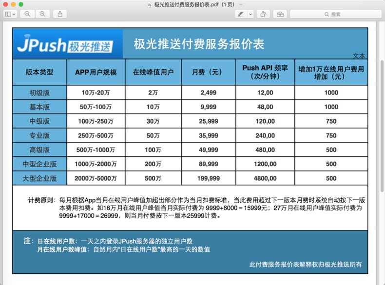
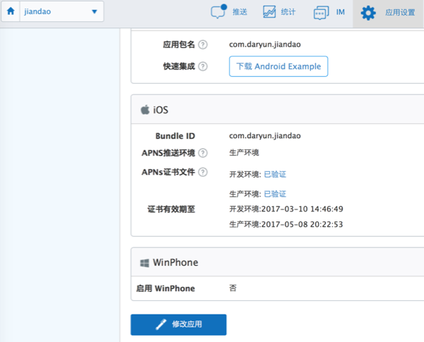
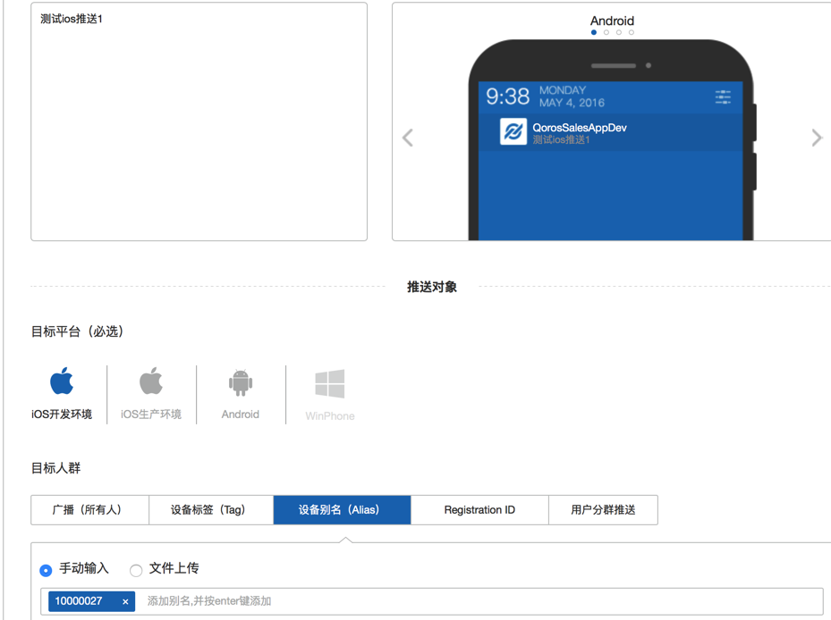
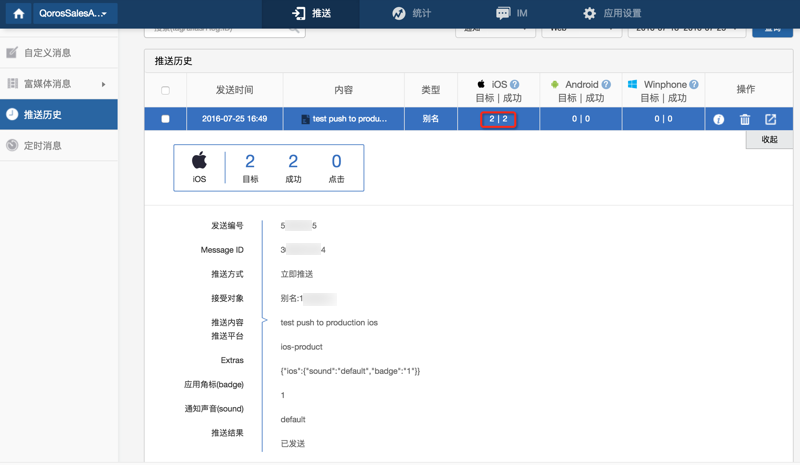
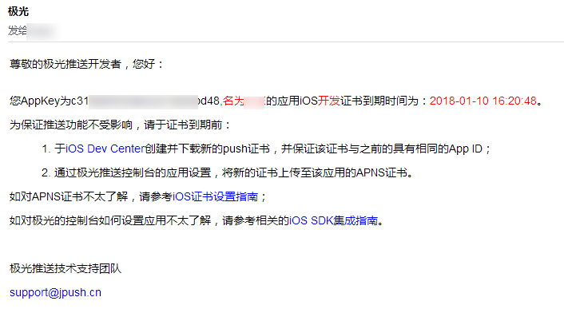

极光推送JPush
极光推送=JPush
极光推送的价格
默认是有免费的服务使用的。限制是：所有的使用免费的极光推送的APP去共享使用20万/秒的服务。
- -> 换句话说：如果你的APP的消息推送正好赶上其他所有的免费的APP使用极光的服务的高峰期，则消息推送可能会稍微延迟一段时间。
- 其实一般情况下，多数情况下，延迟也还是很低的，总体的感觉是80%以上的时间，服务器端消息推送后，APP端收到消息的延迟，都是在1秒～5秒，足够一般的APP使用了，不会觉得多慢的
- -> 换另外一句话说：如果真的是你的APP对于消息推送的推送的及时率有很高的要求，那么就应该去购买收费的极光推送的服务了
- 收费的激光服务的价格：最少每月也要2000多元
- 所以收费服务，对于小公司，还是挺贵的
- 所以对于一般的APP来说，如前面所说的极光的免费的消息推送的服务，也就够用了，不需要额外花钱买收费的
- 收费的激光服务的价格：最少每月也要2000多元
另外，对于APP用户规模大的，需要购买收费的极光的服务的，附上价格表，供参考：

极光推送消息基本知识
iOS的证书
iOS的消息推送，支持开发环境和测试环境。
需要分别去上传对应的证书才可以的。

标签tag和别名Alias
可以通过tag或alias，去实现，给某类用户设置同一个tag或alias，然后消息推送的时候，给同一类的用户批量推送相同的消息。
比如，牛只管理app中，对于牛只的管理员，当发生异常信息，比如牛只设备掉落时，给所有的同一组的管理员，都发送预警消息。
另外一个典型的使用方式是：
比如对于一个APP，内部有一套自己的用户系统，其中每个用户有自己的userid，比如类似于UUID的这种：user-39ee1299-4e29-43cf-904f-d8826ce1b899
而如果移动端想要实现接收到服务器推送不同的消息给每个用户，其中一种实现方式就是：
每个用户都设置一个，借用userid的独一无二的别名，比如：
user-39ee1299-4e29-43cf-904f-d8826ce1b899
后续服务器端给每个用户推送消息时，就直接给对应别名去推送消息，对应的用户即可收到对应的消息推送了。
其中几点需要说明的是：
- APP中用户登录后，APP初始化时（在init初始化JPush的API后）去注册register对应的自己用户ID对应的别名alias
- 符合正常的逻辑：用户登录后，应该能收到消息推送
- APP中用户退出登录时，去注销对应的JPush的对应的别名
- 这样后续该用户就不会收到消息提醒了
- 符合正常的逻辑：用户注销后，不应该继续收到消息推送
JPush的服务不错
后台管理页面中可以方便测试消息推送
可以方便的去测试消息发送
支持对于：
- iOS
- 生产环境
- 测试环境
- Android
还可以指定发送对象
- 具体的某个设备
- 某个tag
- 某个alias
- 广播所有设备
等等。
截图供参考：

推送后，可以方便的看到推送的结果：

iOS证书将要过期会及时提醒
极光推送在证书快要过期前一个月会发邮件通知管理员的，需要你及时去更新证书：

然后去Apple的开发者网站Apple Developer中去：
- 撤销旧证书
- 重新生成新证书
- 重新到JPush后台上传新证书
即可。
iOS中JPush相关示例代码
此处附上之前的iOS的app：简道中的JPush的消息推送的iOS端的相关代码，供参考：
APP初始化部分的JPush相关配置
文件：AppDelegate.swift
代码：
let JpushAppKey:String = "54abxxxxxxxxxx47"
let JpushChannel:String = "iOS-AppStore"
//let JpushIsProduction:Bool = false
let JpushIsProduction:Bool = true
func application(application: UIApplication, didFinishLaunchingWithOptions launchOptions: [NSObject: AnyObject]?) -> Bool {
gLog.debug("didFinishLaunchingWithOptions launchOptions=\(launchOptions)")
//1.reggister device
JPUSHService.registerForRemoteNotificationTypes(UIUserNotificationType.Badge.rawValue | UIUserNotificationType.Sound.rawValue | UIUserNotificationType.Alert.rawValue , categories: nil)
JPUSHService.setupWithOption(launchOptions, appKey: JpushAppKey, channel: JpushChannel, apsForProduction: JpushIsProduction)
listenRemotePush()
return true
}
func application(application: UIApplication, didRegisterForRemoteNotificationsWithDeviceToken deviceToken: NSData) {
//2.recevie device token for register
gLog.debug("deviceToken=\(deviceToken)")
//deviceToken=<77366f0d c4a4f2f4 74fe24de 5db46132 c725ee1a 8e41b1fc a9a511bc 832c0113>
NSNotificationCenter.defaultCenter().postNotificationName("DidRegisterRemoteNotification", object: deviceToken)
//3. send device token to push server
JPUSHService.registerDeviceToken(deviceToken)
}
func application(application: UIApplication, didFailToRegisterForRemoteNotificationsWithError error: NSError) {
gLog.debug("error=\(error.localizedDescription)")
}
// //for iOS <= 6.0
// func application(application: UIApplication, didReceiveRemoteNotification userInfo: [NSObject : AnyObject]) {
// //4. receive the remote push message from (APNS -> JPUSH) server
// print("didReceiveRemoteNotification")
// print("userInfo=\(userInfo)")
// JPUSHService.handleRemoteNotification(userInfo)
// NSNotificationCenter.defaultCenter().postNotificationName("AddNotificationCount", object: nil)
// }
//for iOS >= 7.0
func application(application: UIApplication, didReceiveRemoteNotification userInfo: [NSObject : AnyObject], fetchCompletionHandler completionHandler: (UIBackgroundFetchResult) -> Void) {
gLog.debug("userInfo=\(userInfo)")
JPUSHService.handleRemoteNotification(userInfo)
// NSNotificationCenter.defaultCenter().postNotificationName("AddNotificationCount", object: nil)
NSNotificationCenter.defaultCenter().postNotificationName("handleRemoteNotification", object: userInfo)
completionHandler(UIBackgroundFetchResult.NewData)
}
func application(application: UIApplication, didReceiveLocalNotification notification: UILocalNotification) {
gLog.debug("notification=\(notification)")
//notification=<UIConcreteLocalNotification: 0x15f158b60>{fire date = 2016年3月11日 星期五 中国标准时间 16:33:53, time zone = Asia/Shanghai (GMT+8) offset 28800, repeat interval = 0, repeat count = UILocalNotificationInfiniteRepeatCount, next fire date = (null), user info = (null)}
JPUSHService.showLocalNotificationAtFront(notification, identifierKey: nil)
// if let userInfo = notification.userInfo {
// let newMessage = userInfo["newMessage"] as! Message
// debugPrintMsg(newMessage)
// }
}
@available(iOS 7, *)
func application(application: UIApplication, didRegisterUserNotificationSettings notificationSettings: UIUserNotificationSettings) {
gLog.debug("notificationSettings=\(notificationSettings)")
//notificationSettings=<UIUserNotificationSettings: 0x79070130; types: (UIUserNotificationTypeAlert UIUserNotificationTypeBadge UIUserNotificationTypeSound);>
/*
notificationSettings=<UIUserNotificationSettings: 0x12e6529a0; types: (UIUserNotificationTypeAlert UIUserNotificationTypeBadge UIUserNotificationTypeSound);>
2016-03-11 16:22:05.110 | JPUSH | W - [JPUSHClientController] Not get deviceToken yet. Maybe: your certificate not configured APNs? or current network is not so good so APNs registration failed? or there is no APNs register code? Please refer to JPush docs.
2016-03-11 16:22:05.113 | JPUSH | I - [JPUSHSessionController] sis is not on protect
2016-03-11 16:22:05.116 | JPUSH | I - [JPUSHAddressController] Action - sendSisRequest
*/
}
@available(iOS 7, *)
func application(application: UIApplication, handleActionWithIdentifier identifier: String?, forLocalNotification notification: UILocalNotification, completionHandler: () -> Void) {
gLog.debug("handleActionWithIdentifier=\(identifier), forLocalNotification=\(notification)")
}
@available(iOS 7, *)
func application(application: UIApplication, handleActionWithIdentifier identifier: String?, forRemoteNotification userInfo: [NSObject : AnyObject], withResponseInfo responseInfo: [NSObject : AnyObject], completionHandler: () -> Void) {
gLog.debug("handleActionWithIdentifier=\(identifier), forRemoteNotification=\(userInfo), withResponseInfo=\(responseInfo)")
}
func networkDidLogin(notification:NSNotification) {
gLog.debug("已登陆 networkDidLogin notification=\(notification)")
if let registrationID = JPUSHService.registrationID() {
gLog.debug("registrationID=\(registrationID)")
}
}
func listenRemotePush(){
gLog.debug("")
let defaultCenter:NSNotificationCenter = NSNotificationCenter.defaultCenter()
defaultCenter.addObserver(self, selector: #selector(AppDelegate.networkDidSetup(_:)), name:kJPFNetworkDidSetupNotification, object: nil)
defaultCenter.addObserver(self, selector: #selector(AppDelegate.networkDidClose(_:)), name:kJPFNetworkDidCloseNotification, object: nil)
defaultCenter.addObserver(self, selector: #selector(AppDelegate.networkDidRegister(_:)), name:kJPFNetworkDidRegisterNotification, object: nil)
defaultCenter.addObserver(self, selector: #selector(AppDelegate.networkDidLogin(_:)), name:kJPFNetworkDidLoginNotification, object: nil)
defaultCenter.addObserver(self, selector: #selector(AppDelegate.networkDidReceiveMessage(_:)), name:kJPFNetworkDidReceiveMessageNotification, object: nil)
defaultCenter.addObserver(self, selector: #selector(AppDelegate.serviceError(_:)), name:kJPFServiceErrorNotification, object: nil)
defaultCenter.addObserver(self, selector: #selector(AppDelegate.didRegisterRemoteNotification(_:)), name:"DidRegisterRemoteNotification", object: nil)
defaultCenter.addObserver(self, selector: #selector(AppDelegate.handleRemoteNotification(_:)), name:"handleRemoteNotification", object: nil)
}
func handleRemoteNotification(remoteNotification:NSNotification) {
gLog.debug("remoteNotification=\(remoteNotification)")
if let userInfoDict = remoteNotification.object {
gLog.debug("userInfoDict=\(userInfoDict)")
if let aps = userInfoDict["aps"] {
if let badge = aps?["badge"] as? Int {
gLog.debug("badge=\(badge)")
UIApplication.sharedApplication().applicationIconBadgeNumber = badge
}
}
if UIApplication.sharedApplication().applicationState == UIApplicationState.Active {
gLog.debug("not handle remote notification for app is active running")
} else {
gLog.debug("applicationState=\(UIApplication.sharedApplication().applicationState)")
SingletonConversationTVC().updateAllConversation()
}
}
}
登录后去初始化调用
文件：LoginViewController.swift
代码：
func doAfterLogin(){
dispatchBackground_async({
//init message related
SingletonMainVC().initWebSocket()
...
})
}
文件：MainViewController.swift
代码：
func jpushSetAlias() {
gLog.debug("")
var userIdAlias = gCurUserItem.id
userIdAlias = userIdAlias.replace("user-", to: "usr-")
userIdAlias = userIdAlias.replace("-", to: "_")
gLog.debug("userIdAlias=\(userIdAlias)")
//user-e6882cab-cedf-4335-9b7c-612cd5b4d37d
//usr_e6882cab_cedf_4335_9b7c_612cd5b4d37d
jpushSetAlias(userIdAlias)
}
func jpushSetAlias(userIdAlias:String) {
gLog.debug("userIdAlias=\(userIdAlias)")
JPUSHService.setAlias(userIdAlias, callbackSelector: #selector(MainViewController.aliasCallBack(_:tags:alias:)), object: self)
}
func jpushClearAlias() {
gLog.debug("")
jpushSetAlias("")
}
func aliasCallBack(resCode:CInt, tags:NSSet, alias:NSString) {
gLog.debug("resCode=\(resCode), tags=\(self.logSet(tags)), alias=\(alias)")
//resCode=6004, tags=nil, alias=user-e6882cab-cedf-4335-9b7c-612cd5b4d37d
//resCode=6003, tags=nil, alias=e6882cab-cedf-4335-9b7c-612cd5b4d37d
//resCode=0, tags=nil, alias=usr_e6882cab_cedf_4335_9b7c_612cd5b4d37d
if resCode != 0 {
let failMsg = "设置JPUSH推送的别名失败：alias=\(alias)"
gLog.warning(failMsg)
}
}
func initWebSocket(){
dispatchUserInitiated_async({
gLog.debug("gCurUserItem.wsUrl=\(gCurUserItem.wsUrl)")
//ws://jiandao.im/message/user-972b6796-cc82-4058-b29f-9007115116b9/9i8fu0uooq18tunpo9h6grp6gk
self.webSocket = WebSocket(url: NSURL(string: gCurUserItem.wsUrl)!)
self.webSocket.delegate = self
self.webSocket.pongDelegate = self
self.webSocket.connect()
gCurUserItem.wsInited = true
MainViewController.wsFirstInit = true
gLog.debug("websocket \(self.webSocket) has inited and connected")
self.jpushSetAlias()
})
}
正常注册JPush后的log日志
didFinishLaunchingWithOptions
2016-03-12 10:35:48.933 | JPUSH | I - [JPUSHService]
--------------------------- JPush Log ----------------------------
--------------------JPush SDK Version:2.1.0--build:346----------
-----------------AppKey:3a1a8d7c1caa422ee5548da3----------------
----------------------------------------------------------------
2016-03-12 10:35:48.942 | JPUSH | I - [JPUSHClientController] Action - setup
prevStoredUser=Optional("150xxxxxxxx")
prevStotedPassword=Optional("111111")
didRegisterForRemoteNotificationsWithDeviceToken
deviceToken=<89b266fc 31bb2513 20a35909 03a31e9f c8127fef 4946138c 66df7769 617b1c0c>
已注册远程通知 didRegisterRemoteNotification=(Function)
deviceTokenStr=Optional(<89b266fc 31bb2513 20a35909 03a31e9f c8127fef 4946138c 66df7769 617b1c0c>)
didRegisterUserNotificationSettings
notificationSettings=<UIUserNotificationSettings: 0x14dd5cf60; types: (UIUserNotificationTypeAlert UIUserNotificationTypeBadge UIUserNotificationTypeSound);>
2016-03-12 10:35:49.107 | JPUSH | I - [JPUSHSessionController] sis is not on protect
2016-03-12 10:35:49.109 | JPUSH | I - [JPUSHAddressController] Action - sendSisRequest
已连接 networkDidSetup notification=NSConcreteNotification 0x14dda9c20 {name = kJPUSHNetworkDidSetupNotification}
已登陆 networkDidLogin notification=NSConcreteNotification 0x14de7f470 {name = kJPUSHNetworkDidLoginNotification}
registrationID=13165ffa4e0b5fb6ba3
2016-03-12 10:35:50.104 | JPUSH | I - [JPUSHDeviceTokenReport] upload device token success